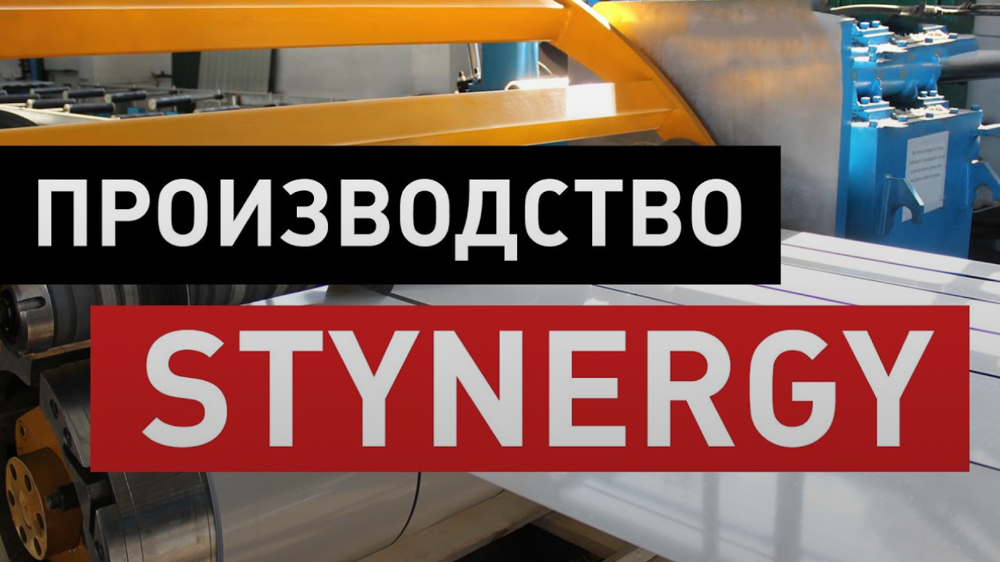

Производство
Производственные мощности группы компаний STYNERGY
Продукция, выпускаемая на всех заводах STYNERGY, соответствует единому стандарту, производится по единым ТУ и сертифицирована. На производстве применяется современное оборудование для переработки тонколистовой стали с покрытием: польские (DACHPOLL) и финские станки (Formia), что позволяет выпускать конкурентоспособную продукцию, отвечающую международным стандартам. Производственные мощности STYNERGY расположены на собственных площадях в промышленной зоне г. Протвино, Московской области.
Стиль работы STYNERGY определяют тщательно продуманная организация производственных процессов и высокое качество обслуживания. Продукция, отвечающая требованиям самого взыскательного клиента, имеет широкий ассортимент, разнообразный цветовой диапазон, легко монтируется, не требует специального инструмента для монтажа и не нуждается в особом уходе при эксплуатации.
Продукция STYNERGY оптимальна по соотношению «цена-качество» и изготовлена с соблюдением производственных норм и международных стандартов. По истечении срока службы материалы из стали можно отправить на вторичную переработку в утиль и получить дополнительную прибыль. Производственные мощности и оборудование позволяют производить продукцию по индивидуальным размерам, что минимизирует отходы материала при монтаже, снижая себестоимость объекта.
Продукция, выпускаемая заводах STYNERGY:
- металлочерепица с тремя типами профиля: СМ Классик / Garda / Stella
- профнастилы стеновые и кровельные: С8 / С20 / С21 / НС35 / Н60 / Н75
- элементы безопасности кровли,
- водосточные системы,
- металлический сайдинг,
- элементы подконструкции для вентилируемых фасадов,
- сэндвич-панели поэлементной сборки,
- профили и комплектующие для гипсокартона,
- металлоконструкции для быстровозводимых зданий.
Конструкции из стали для быстровозводимых зданий
Представляют собой холоднокатанные профиля из оцинкованной стали «С», «П», «Z» и «Г» образной формы поперечного сечения с отверстиями для их крепления. На строительной площадке посредствам специальных фасонных изделий и болтов, профиля собираются в узлы, которые в последствии составляют каркас здания.
Конструкции из стали для быстровозводимых зданий
Ассортимент необходимых профилей и других комплектующих для возведения каркаса здания определяется на стадии проектирования (проекты марок КМ и КМД), проекты выполняются силами собственной квалифицированной проектной группы, они учитывают все пожелания заказчика в части конфигурации будущей постройки, а также возможные нагрузки (собственные, снеговые, ветровые и технологические) на него. Далее проект в виде технического задания поступает на производственную линию, на основании чего и будут произведены необходимые профиля.
Производство профиля заключается в прокатке листа оцинкованной стали заданной толщины и ширины через группу валков производственной линии. После прокатки профиля необходимой длины отсекается оставшаяся часть стального листа гильятинным ножом, установленным на стане линии, далее с помощью пресса, методом пробивки, создаются отверстия необходимого диаметра в заданных проектом местах профиля. После завершения производства всех профилей одного технического задания, готовый заказ передается на склад комплектации, где каждый элемент маркируется в соответствии с проектной документацией, упаковывается в пачки для безопасной его транспортировки и оснащается необходимыми комплектующими (метизы, связи, фасонные изделия и т.п.).
Исходным сырьем для производства профилей является холоднокатанная оцинкованная сталь толщиной 0,9-3,0 мм. и содержанием цинка 275 г/м2 (I класс цинкования), которая приобретается в виде бухт на лидирующих металлургических комбинатах РФ – НЛМК, Северcталь, ММК. При необходимости перед прокаткой профиля стальной лист разрезается по ширине на более узкие части (штрипс).